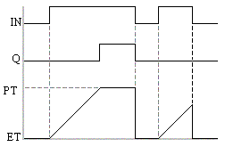
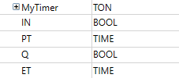
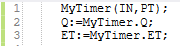
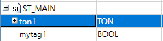
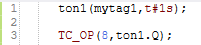
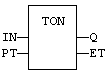
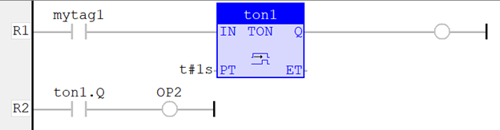

Function Block
On timer.
|
Name |
Type |
Description |
|
IN |
BOOL |
Timer command. |
|
PT |
TIME |
Programmed time. |
|
Name |
Type |
Description |
|
Q |
BOOL |
Timer elapsed output signal. |
|
ET |
TIME |
Elapsed time. |

The timer starts on a rising pulse of IN input. It stops when the elapsed time is equal to the programmed time. A falling pulse of IN input resets the timer to 0. The output signal is set to TRUE when programmed time is elapsed, and reset to FALSE when the input command falls.
In LD language, the input rung is the IN command. The output rung is Q the output signal.
PT can be entered as a TIME literal. e.g. T#100ms, T#3s250ms, T#3h5m, T#16d8h56s.
Example 1:
Defined variables with its corresponding data type:

When IN becomes TRUE, MyTimer starts the timer. When the PT is reached, MyTimer.Q is TRUE.

Example 2 :
ton1 is a variable created of data type TON with mytag1 (BOOL) and t#1s (TIME) as arguments to the function: IN and PT respectively.

When mytag1 becomes TRUE, ton1 starts the timer. When the PT is reached, ton1.Q is TRUE, which then turns on Output 8.


When mytag1 becomes TRUE, ton1 starts the timer. When the PT is reached, ton1.Q is TRUE, which then turns on Output 2.
